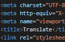

Hover.css
Transform

transform: translateY(50px);
transform: translate(50px, -50px);
transform: translateZ(100px);
transform: translate3d(50px, 50px, 100px);
transform: scale(1.5, 1.2);
transform: perspective(500px) scaleZ(2) translateZ(100px);
transform: rotate(45deg);
transform: skewY(-20deg) scaleX(2);
transform: rotateX(45deg) skewY(-20deg) scaleX(2);